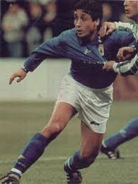
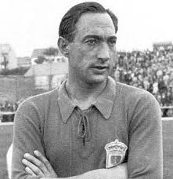
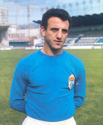

carlosgol:
Carlos:

Juan Carlos:
Langara:
Isidron:
''UNA DE LAS MEJORES SERIES DE LA HISTORIA DE LA TELEVISION'' ¡Imprescindible! ¡Oh Dios!, aun lloro la pérdida de Los Soprano.
jabalidelbierzo:
Marianin:
Una obra maestra, todo tan conectado, tan interrelacionado, tan magistral de principio a fin. Es la mejor serie de todos los tiempos.
CerveGol:

Cervero:
Simplemente GENIAL! 100% recomendable. Al principio recuerdo que eran un poco densos los capítulos ya que los hechos iban ocurriendo MUY lentamente, pero luego nada que criticar. EXCELENTE SERIE
michuovi:

Vicente:
Una obra imprescindible. Genial. El personaje de Walter White es todo un ensayo en sí mismo. Se reducen los arquetipos al mínimo imprescindible: desde un inicio donde parece que cada uno de los personajes es sencillo de encasillar, se observa una evolución sobresaliente. El concepto del bien y el mal, los buenos y los malos, tan típico y cargante en el cine americano, se diluye. Todo es mucho más complejo, cuestionable. Da para continuos debates en campos de lo más diversos. Gracias a sus creadores y enhorabuena.
dubovsky:

Dogo30:
buena serie con una trama bastante buena donde el centro de la historia personalmente sucede en la frustración de esos sueños que no podemos alcanzar.
pauloBento:

Thunderbolt21:
Me ha encantado esta serie, en los primeros capítulos ya me engaché y no he podido parar hasta el final. Buenísima.
bolaño:

Yate80:
Unica serie a la cual le dedico un 4.5, simplemente espectacular. De desarrollo lento y pausado, es una serie que empieza con buena nota y va ganado decimales con cada capitulo que transcurre. Es impresionante ser espectador de moralidad y sentido comun encontrados, de la lucha entre la etica y la cruda realidad... Siempre con un correcto equilibrio y presentando a unos personajes tan dispares como nobles en su finalidad. Una gran serie que recomiendo, aunque no te enganche desde el primer capitulo, sera la segunda temporada la que te impresione y fascine. *Especial atencion al doblaje al castellano, un grandioso y profesional trabajo.